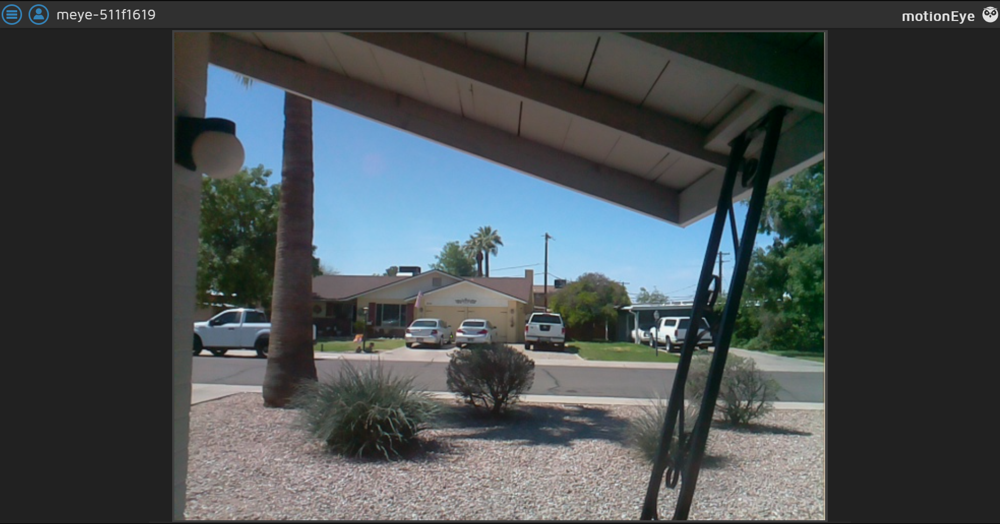

Secuirty Camera
I made a DIY security camera using a Raspberry Pi Zero W and a Pi Camera module, running MotionEyeOS.
The Build: I used a Raspberry Pi Zero W for its compact size and built-in Wi-Fi, and hooked up the official Pi Camera. The whole thing is small enough to hide behind a plant or stick on a window, but still powerful enough to stream and record video.
Software – MotionEyeOS: I flashed MotionEyeOS onto a microSD card, plugged it into the Pi, and it booted straight into a web-configurable security camera interface.
Networking: Since the Pi Zero W has Wi-Fi, I connected it to my home network and set a static IP so I could always reach it. From there, I was able to access the camera feed from my phone or laptop. I even integrated it with Tailscale, so I can check the live feed securely from anywhere.
The Build: I used a Raspberry Pi Zero W for its compact size and built-in Wi-Fi, and hooked up the official Pi Camera. The whole thing is small enough to hide behind a plant or stick on a window, but still powerful enough to stream and record video.
Software – MotionEyeOS: I flashed MotionEyeOS onto a microSD card, plugged it into the Pi, and it booted straight into a web-configurable security camera interface.
Networking: Since the Pi Zero W has Wi-Fi, I connected it to my home network and set a static IP so I could always reach it. From there, I was able to access the camera feed from my phone or laptop. I even integrated it with Tailscale, so I can check the live feed securely from anywhere.


